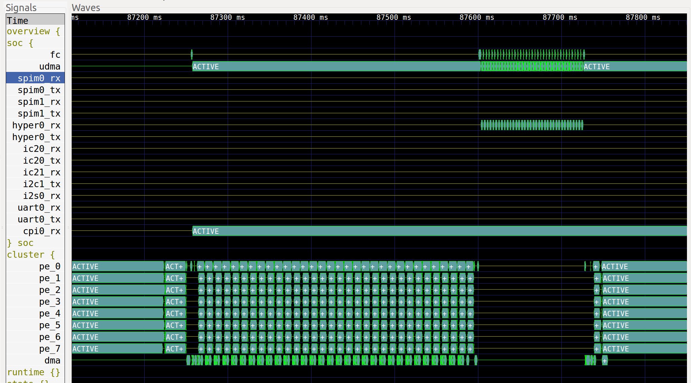
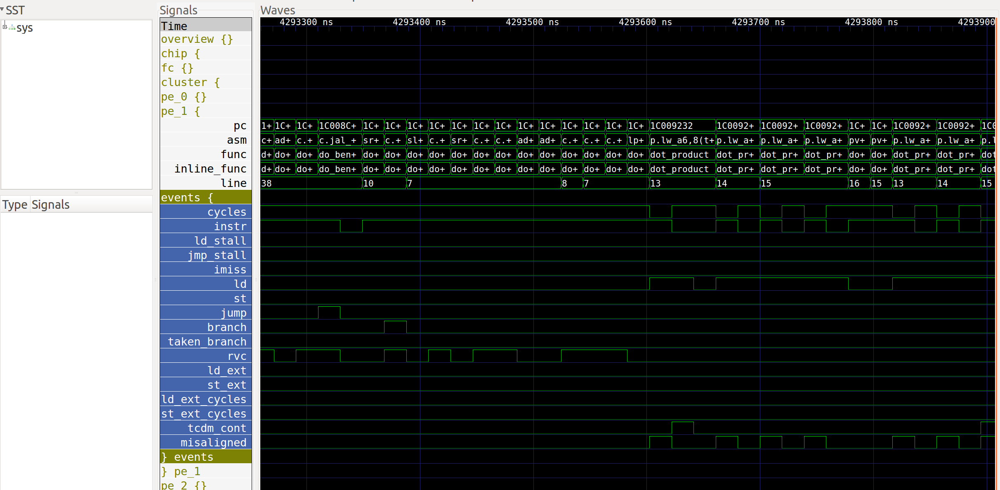

GVSOC¶
Usage¶
The virtual platform must be launched through the common runner called pulp-run.
The specified platform must be gvsoc (through option -\-platform) and the only mandatory option is either -\-config-file or -\-config in order to give the system configuration to simulate (see next section).
As the virtual platform will generate several temporary files, it is also good to launch it from a specific folder or to specify it through the -\-dir option.
All the other options for the platform must be given through the configuration file (see next sections). The most common one is the binary to be simulated. A few common options has a shortcut as a direct option to pulp-run, you can execute this command to get them:
$ pulp-run --platform=gvsoc --config=gap_rev1 --help
After the options, the set of commands to execute must be specified. The usual ones are prepare for generating the platform stimuli (e.g. to prepare the flash image containing the test binary), and run for running the simulation.
Here is a full example:
$ pulp-run --platform=gvsoc --config=gap_rev1 --binary=test prepare run
Configuration¶
The virtual platform is simulating the architecture which is described by the specified system configuration, described with a JSON file.
This can be first done through the option -\-config-file to give the path of the JSON file. This can be either an absolute path or a relative path, in which case the config in search in the paths given by the environment variable SDK_CONFIGS_PATH, which contains a list of possible paths separated by :.
This can also be done through the option -\-config which gives the name of the configuration to simulate. This is equivalent to -\-config-file=chips/<name>/<name>.json where <name> is the value of the option.
The configuration is a high-level description of the architecture, where all important properties are specified (e.g. memory sizes). This high-level view of the architecture is used to generate a low-level and detailed view of the architecture which is used by gvsoc to know what to instantiate, configure and connect. Both levels can be customized by the user. The high-level view is called the template, and can be customized to easily change architecture properties such as memory sizes. The low-level view is called the configuration and can be customized to change properties of one specific component, such as a specific behavior of one core.
Options¶
Options to the virtual platform are passed by customizing the system configuration.
This can be first done using the option -\-property=<path>=<value> to specify a property in the JSON file to be overwritten. <path> is giving the property path in the JSON file where the property must be overwritten and <value> the value to be set. As a JSON file is hierarchical, <path> describes a hierarchical path, similar to a file system path. As described in the previous section, a property can be changed either in the template or in the configuration. Any property beginning with config/ will change a property in the configuration while the others will change it in the template.
Here is an example to activate instructions traces:
pulp-run --platform=gvsoc --config=gap_rev1 --binary=test prepare run --property=config/gvsoc/trace=insn
There is however a shortcut for this property, which can be set with this option:
pulp-run --platform=gvsoc --config=gap_rev1 --binary=test prepare run --trace=insn
The second way to customize the system configuration is to provide a INI-style configuration file containing a set of properties through the option -\-config-user . The JSON path of a property is the concatenation of the section name, and the INI property name.
Here is an example of such a file to activate instruction traces:
[config.gvsoc]
trace=insn
And the command to specify it:
pulp-run --platform=gvsoc --config=gap_rev1 --binary=test prepare run --config-user=myconfig.ini
In both ways, refer to other sections to get the various properties which can be set to configure the system.
System traces¶
Description¶
The virtual platform allows dumping architecture events to help developers debugging their applications by better showing what is happening in the system.
For example, it can show instructions being executed, DMA transfers, events generated, memory accesses and so on.
This feature can be enabled and configured through the option -\-trace. This option takes an argument which specifies a regular expression of the path in the architecture where the traces must be enabled, and optionally a file where the traces should be dumped. All components whose path matches the specified one will dump traces. Several paths can be specified by using the option several times. Here is an example that activates instruction traces for core 0 and core 1:
pulp-run --platform=gvsoc --config=gap_rev1 --binary=test prepare run --trace=pe0/insn --trace=pe1/insn"
The trace file should look like the following:
194870000: 19487: [/sys/board/chip/soc/cluster/pe1/insn] M 1c001a96 c.li a2, 0, 0 a2=00000000
194870000: 19487: [/sys/board/chip/soc/cluster/pe0/insn] M 1c001a2c beq a1, s4, 76 a1:00000020 s4:00000025
There is usually one line per event, although an event can sometimes takes several lines to display more information.
The number on the left gives the timestamp of the event, in picoseconds, and the one right after the number of cycles. Both are given because different blocks like clusters can have different frequencies. The timestamp is absolute and will increase linearly while the cycle count is local to the frequency domain.
The second part, which is a string, gives the path in the architecture where the event occurred. This is useful to differentiate blocks of the same kind that generate the same event. This path can also be used with the -\-trace option to reduce the number of events.
The third part, which is also a string, is the information dumped by the event, and is totally specific to this event. In our example, the core simulator is just printing information about the instruction that has been executed.
Trace path¶
One difficulty is usually to find out which paths should be activated to get the needed information. One method is to dump all the events with -\-trace=.*, then find out which one are interesting and then put them on the command line. Here are the paths for the main components (note that this can differ from one chip to another):
| Path | Description |
|---|---|
| /sys/board/chip/cluster/pe0 | Processing element, useful to see the IOs made by the core, and the instruction it executes. You can add /iss to just get instruction events |
| /sys/board/chip/cluster/event_unit | Hardware synchronizer events, useful for debugging inter-core synchronization mechanisms |
| /sys/board/chip/cluster/pcache | Shared program cache accesses |
| /sys/board/chip/cluster/l1_ico | Shared L1 interconnect |
| /sys/board/chip/cluster/l1/bankX | L1 memory banks (the X should be replaced by the bank number) |
| /sys/board/chip/soc/l2 | L2 memory accesses |
| /sys/board/chip/cluster/dma | DMA events |
At first, the most interesting traces are the core instruction traces. As they show not only the instructions executed but also the registers accessed, their content and the memory accesses, they are very useful for debugging bugs like memory corruptions.
Instruction traces¶
Here is an example of instruction trace:
4890000: 489: [/sys/board/chip/soc/cluster/pe0/insn] M 1c001252 p.sw 0, 4(a5!) a5=10000010 a5:1000000c PA:1000000c
The event information dumped for executed instructions is using the following format:
<address> <instruction> <operands> <operands info>
<address> is the address of the instruction.
<instruction> is the instruction label.
<operands> is the part of the decoded operands.
<operands info> is giving details about the operands values and how they are used.
The latter information is using the following convention:
- When a register is accessed, its name is displayed followed by = if it is written or : if it is read. In case it is read and written, the register appears twice. It is followed by its value, which is the new one in case it is written.
- When a memory access is done, PA: is displayed, followed by the address of the access.
- The order of the statements is following the order on the decoded instruction
The memory accesses which are displayed are particularly interesting for tracking memory corruptions as they can be used to look for accesses to specific locations.
How to dump to a file¶
By default, all traces are dumped to the standard output and it is possible to specify the file where the traces should be dumped. The file must be given for every --trace option. The same file can be used, to get all traces into the same file, or different files can be used.
Here is an example to get all possible traces into one file:
make run PLT_OPT=--trace=.*:log.txt
And another example to get instruction traces to one file and L2 memory accesses to another file:
make run PLT_OPT=--trace=insn:insn.txt --trace=l2:l2.txt
Debug symbols¶
Some features like instruction traces can use debug symbols to display more information. These features are by default enabled and can be disabled with the option -\-no-debug-syms.
To have such features working, the binaries must be compile in debug mode so that debug symbols are present in the binaries and the virtual platform can generate debug symbols information.
The toolchain must be accessible for this option to work, either by making sure it is in accessible through environment variable PATH or by defining this environement variable:
export PULP_RISCV_GCC_TOOLCHAIN=<path containing bin/riscv32-unknown-elf-readelf>
Once this works, the instruction trace should look like the following:
9398037447: 466538: [/sys/board/chip/soc/fc/insn ] _get_next_timeout_expiry:167 M 1c001d7c sw ra, 28(sp) ra:1c002154 sp:1b000db0 PA:1b000dcc
There is a column which displays the debug information. There are 2 information separated by :, the first one is the function which this instruction belongs to, and the second is the line number of the instruction in the source code.
VCD traces¶
The virtual platform can dump VCD traces which show the state of several components over the time, like the cores PC, the DMA transfers, etc, and thus gives a better overview than the system traces.
Configuration¶
VCD tracing can be activated through option -\-vcd:
pulp-run --platform=gvsoc --config=gap_rev1 --binary=test prepare run --vcd
Once the platform is run, this will generate a VCD file called all.vcd in the build folder. This file is a raw file containing all the signals value.
Another file called view.gtkw is generated and can be opened using Gtkwave. This is a script file which will setup the view with the most interesting signals. The command to be executed is displayed at the beginning of the simulation when VCD traces are enabled.
Trace format¶
The default format is the FST gtkwave format, as it is much faster and smaller than VCD. However, it is less robust and can make Gtkwave crash. The following option can be used to change the format to VCD:
pulp-run --platform=gvsoc --config=gap_rev1 --binary=test prepare run --vcd --event-format=vcd
Display¶
Any VCD viewer can be used to display the traces. On Linux the free Gtkwave viewer can be used. For example to display the PC traces, you can launch it with:
gtkwave <vcd file path>
Then click on Search->Search Signal Regexp, enter "pc", click on Select All and Insert, and close the box. You should now see the PC traces in the view, you can zoom out to see the full window.
It is also possible to open the generated script file mentioned above with this command:
gtkwave <script path>
Trace selection¶
More traces can be activated by either specifying trace tags or names. Tags will activate a set of traces while names will activate specific traces.
Tags can be activated with the option -\-event-tag=<name>. This option can be given several times to specify several tags. The tag overview is always selected, and others can be selected from this list: debug, asm, pc, core_events, clock.
Here is an example:
pulp-run --platform=gvsoc --config=gap_rev1 --binary=test prepare run --vcd --event-tag=debug --event-tag=core_events
Specific events can be selected with the option -\-event=<name. This option can be given several times to specify several traces. Like for system traces, the name is a regular expression which will be compared against the path of each trace. Any trace which will match the regular expression will be enabled.
Here is an example to activate all traces:
pulp-run --platform=gvsoc --config=gap_rev1 --binary=test prepare run --vcd --event-tag=debug --event=.*
View description¶
The view displayed from the Gtkwave script is made of 2 parts.
The first part, on the top (see the image below), is showing an overview of the execution with the most useful signals. It basically shows the state of each important block in the system. This is useful to quickly check what is being executed in the whole system.
Some groups of this part are by default closed, and can be opened by double-clicking on them, like the group stats which shows the number of instructions per cycle (IPC) for each core. This number is an average and can be slightly shifted with respect to the instructions executed.
The second (see the image below), is showing a more detailed view of the execution (additional tags or traces must be specified). The program counter is shown, with also debug information about the function being executed, the disassembled instructions and so on. For each core, a group called events contained information about the state of the core (stalls, loads, instructions, etc). This is useful to understand why a core is being stalled.
Interactive mode¶
In case the trace file becomes too big, it is possible to open gtkwave in interactive mode so that it is getting the traces in real time. For that launch the platform with this option:
pulp-run --platform=gvsoc --config=gap_rev1 --binary=test prepare run --event=.* --gtkw
This will automatically open Gtkwave and the traces are automatically updated.
Application profiling¶
The virtual platform is for now not providing any particular feature in terms of profiling except for hardware performance counters whose most of them are modeled.
To use them, the test should configure and use them as on the real silicon, with the difference that on gvsoc all performance counters are implemented, not only one.
Timing models¶
Timing models are always active, there is no specific option to set to activate them. They are mainly timing the core model so that the main stalls are modeled. This includes branch penalty, load-use penalty an so on. The rest of the architecture is slightly timed. Remote accesses are assigned a fixed cost and are impacted by bandwidth limitation, although this still not reflect exactly the HW (the bus width may be different). L1 contentions are modeled with no priority. DMA is modeled with bursts, which gets assigned a cost. All UDMA interfaces are finely modeled.
Power models¶
This is for now a very preliminary work. Power traces can be showed when VCD traces are activated. Each power source is able to register an amount of energy, which is showed inside a VCD trace as a pulse.
For now only the core is registering the energy consumed by an instruction, but all instructions are assigned a fixed cost, which just has an arbitrary value.
A more detailed power report will soon be produced, and power sources added.
Devices¶
The virtual platform is by default simulating only a stand-alone chip with a few default devices which are required to boot a simple example. Device models such as camera, flash or microphones can be connected in order to run full applications.
The devices to be simulated must be specified using the standard runner feature for customizing peripherals, see Device configuration.
Most usefull commands¶
For activating instruction traces with debug symbols:
pulp-run --platform=gvsoc --config=gap_rev1 --binary=test prepare run --trace=insn --debug-syms
For activating all traces:
pulp-run --platform=gvsoc --config=gap_rev1 --binary=test prepare run --trace=.*
For activating VCD traces (traces are dumped to the file *all.vcd):
pulp-run --platform=gvsoc --config=gap_rev1 --binary=test prepare run --event=.*